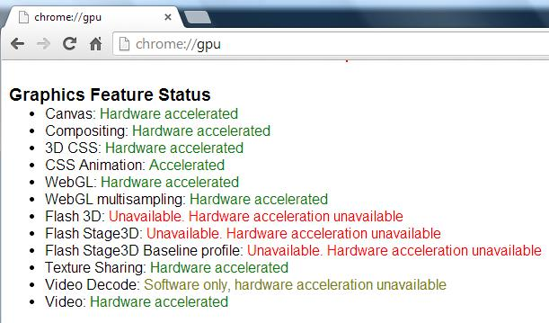
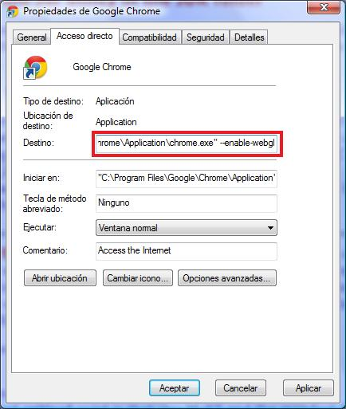
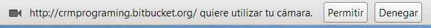
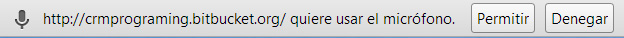

Instrucciones
A fin de poder utilizar correctamente las herramientas de Realidad Infantil, se muestra la siguiente página como medio para explicar los requisitos mínimos a utilizar y las instrucciones:
Google Chrome
Google Chrome es un navegador web desarrollado por Google disponible para su descarga de manera gratuita. Se ha especificado este navegador ya que se utilizan herramientas propias del mismo para reproducir los elementos en realidad aumentada, además de capturar e interpretar sonidos.
Cámara Web
Para poder representar en el mundo real los objetos, se ve necesario utilizar una Cámara Web la cual capture una escena y busque el elemento necesario sobre el cual construir el elemento de realidad aumentada. Se puede utilizar tanto una cámara externa como las integradas en los portátiles.
Micrófono
Igual que sucedía con la Cámara Web, para poder representar interactuar con el usuario, se ve necesario utilizar un Micrófono el cual capture un sonido y lo interprete. Aunque se puede utilizar de igual forma un micrófono integrado y uno externo, se recomienda usar uno externo para obtener mejores resultados.
Código QR
El software diseñado utiliza la Cámara Web para buscar en un escenario un elemento sobre el cual montar la imagen. Dicho elemento es un Código QR, una imagen en forma de matriz de puntos que contiene información. En este caso, la cámara utiliza uno que puede descargar uno en la sección de descargas. Es recomendable imprimir la imagen, si bien se puede utilizar una tablet o un teléfono móvil donde se muestre el Código QR. No obstante, no se recomienda ya que el brillo de la pantalla del dispositivo móvil dificulta la tarea de localizar el elemento en la escena.
Habitación bien iluminada
Debido a que la Cámara Web intenta localizar el Código QR de una imagen, si la habitación no está lo suficientemente iluminada la cámara será incapaz de distinguir los elementos que se encuentren en ella. Del mismo modo, un exceso de iluminación (focos o brillos que se muestren directamente) también dificulta la tarea a la cámara.
-
Configurar Google Chrome
En el caso de Google Chrome normalmente no es necesario hacer nada para poder mostrar los elementos de Realidad Aumentada. Para comprobar si está habilitado puede escribir en una pestaña about:gpu y buscar los campos WebGL y WebGL multisampling tal y como se ve en la imagen:

En general están activados. No obstante, una forma de activarlo es añadir –enable-webgl en las propiedades de un acceso directo del programa haciendo click derecho sobre éste y pulsando en Propiedades para posteriormente cambiar el campo tal y como se indica en la siguiente imagen:
 -
Habilitar Cámara Web
Una vez configurado correctamente Google Chrome, hace falta dar permisos a nuestro navegador web para que pueda utilizar la Cámara Web. Para ello, cada vez que accedamos a una sección de la página dónde tengamos que utilizar la cámara se nos pedirá permiso para poderla usar tal y como se muestra a continuación:

Haciendo click en el botón de Permitir habilitaremos la Cámara Web para su funcionamiento. Dependiendo del ordenador y de la cámara, tardará más o menos tiempo en mostrar la imagen tomada por ella. Si quiere tiene a su disposición el siguiente enlace donde podrá comprobar el correcto funcionamiento de la cámara: Click aquí.
En ningún momento se utilizará la Cámara Web para ningún otro fin que no sea el descrito en esta página web, respetando así los derechos de privacidad de los usuarios.
Habilitar Micrófono
Al igual que sucedía con la Cámara Web, para poder utilizar el Micrófono hay que darle permisos cuando se solicite.
Para ello, cada vez que accedamos a una sección de la página dónde tengamos que utilizar el micrófono se nos pedirá permiso para poderlo usar
tal y como se muestra a continuación:

Haciendo click en el botón de Permitir habilitaremos el Micrófono para su funcionamiento.
En ningún momento se utilizará el Micrófono para ningún otro fin que no sea el descrito en esta página web, respetando así los derechos
de privacidad de los usuarios.